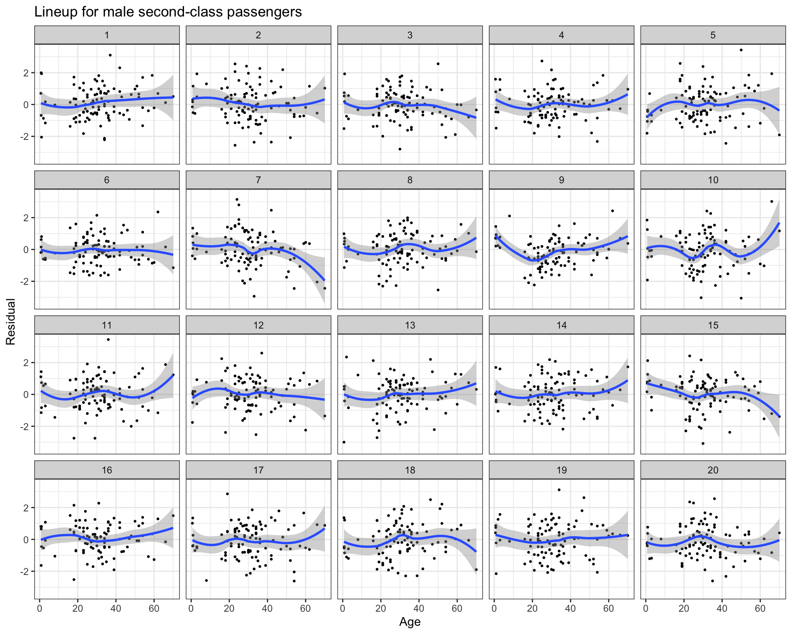

On April 14, 1912, the RMS Titanic collided with an iceberg. Less than three hours later, early in the morning of April 15, the supposedly “unsinkable” ship sank in the Atlantic Ocean. Less than half the passengers and crew survived, due in part to a limited number of lifeboats and an approach to their use that was different to modern standards.
The survivors, however, were not a random sample of the passengers and crew, as certain groups were more likely than others to be allocated a place in one of the lifeboats. In this activity, we will explore passenger characteristics that are associated with a higher probability of survival.
Data: The data are available in the titanic_train dataset in the titanic package in R. (There is also a titanic_test dataset, which we will put aside for now). The titanic_train data contains information on 891 passengers, with variables including:
PassengerId: A unique ID number for each passenger.
Survived: An indicator for whether the passenger survived (1) or perished (0) during the disaster.
Pclass: Indicator for the class of the ticket held by this passengers; 1 = 1st class, 2 = 2nd class, 3 = 3rd class.
Name: The name of the passenger.
Sex: Binary indicator for the sex of the passenger (male or female).
Age: Age of the passenger in years; Age is fractional if the passenger was less than 1 year old.
SibSp: number of siblings/spouses the passenger had aboard the Titanic. Here, siblings are defined as brother, sister, stepbrother, and stepsister. Spouses are defined as husband and wife.
Parch: number of parents/children the passenger had aboard the Titanic. Here, parent is defined as mother/father and child is defined as daughter,son, stepdaughter or stepson. NOTE: Some children traveled only with a nanny, therefore parch=0 for them. There were no parents aboard for these children.
Ticket: The unique ticket number for each passenger.
Fare: How much the ticket cost in US dollars.
Cabin: The cabin number assigned to each passenger. Some cabins hold more than one passenger.
Embarked: Port where the passenger boarded the ship; C = Cherbourg, Q = Queenstown, S = Southampton.
Questions
Answer the following questions with the titanic_train data.
We could imagine that survival rates may differ by age – on the one hand, children may be more likely to receive a lifeboat spot (and they take up less space, too), but on the other hand, children who do enter the water may be less able to withstand the cold. Create an empirical logit plot to examine the relationship between age and survival, and comment on what you see. Remember to experiment with different numbers of bins.
Solution: Here are 3 empirical logit plots with 10, 15, and 25 bins:
From the plots, we can see that the log odds are not necessarily linear in age, at least for smaller values of age (e.g. less than 25). However, a limitation of the plot is that we are only looking at a single explanatory variable, and the pattern may change when additional variables are included.
In addition to age, several other passenger characteristics could relate to survival. Adding additional variables can also help when the shape assumption does not appear to be reasonable. Choose a couple categorical passenger characteristics, and remake your empirical logit plots from question 1, this time coloring and/or faceting the plots by your chosen categorical variables.
Solution: Here are empirical logit plots. In the top row, the first is broken down by sex, while the second is broken down by passenger class. In the bottom row, the plots are both faceted by sex and colored by passenger class.
We would like to fit a logistic regression model to predict the survival probability using passenger age and other characteristics. Based on your exploration in questions 1 and 2, propose a logistic regression model, and fit the model in R.
Solution: Based on our exploration, it looks like age, sex, and passenger class are all related to passenger survival on the Titanic. Once multiple variables are included, the empirical logit plots suggest that the log odds could be approximately linear in Age, which results in the model
m_titanic <-glm(Survived ~ Age + Sex +as.factor(Pclass),data = titanic_train, family = binomial)
Use quantile residual plots to check the shape assumption for your fitted logistic regression model. Plot the quantile residuals against age, and facet the plots by your categorical explanatory variables. Does the shape assumption appear satisfied? If the assumption is not satisfied, are there particular areas of the feature space for which the model assumptions are poor?
Solution: Here are quantile residual plots against Age, faceted by sex and passenger class:
The shape assumption generally appears satisfied, although the plots for male second and third class passengers may show some trend to the residuals. To assess whether this is due to random chance or actual model mis-specification, we can create a lineup of quantile residual plots (using the regressinator package). For example, here is a lineup of 20 plots for male second class passengers:
Show code
library(regressinator)set.seed(82714)qresid_titanic <-function(f){data.frame(resid = statmod::qresid(f),Age =model.frame(f)$Age,Sex =model.frame(f)$Sex,Pclass =model.frame(f)$`as.factor(Pclass)`) |>filter(Sex =="male", Pclass ==2)}model_lineup(m_titanic, fn = qresid_titanic, nsim =20) |>ggplot(aes(x = Age, y = resid)) +geom_point(size =0.5) +geom_smooth(method ='loess', formula = y ~ x) +facet_wrap(vars(.sample)) +labs(x ="Age", y ="Residual") +theme_bw() +labs(title ="Lineup for male second-class passengers")
decrypt("QUg2 qFyF Rx 8tLRyRtx Kj")

I find it hard to identify the original data in the lineup. Probably due to the limited number of male second-class passengers, and the spread of observed age values (which are mostly between 20 and 40 years), the smoother (in blue) is not “flat” in any of the plots. The one that looks “worst” to me is plot 10, but the true data is actually in plot 9:
decrypt("QUg2 qFyF Rx 8tLRyRtx Kj")
[1] "True data in position 9"
So, we do not have any strong evidence of model mis-specification.
If our logistic regression model looks something like \[\log \left( \dfrac{p_i}{1 - p_i} \right) = \beta_0 + \beta_1 \text{Age}_i + \cdots,\] then our model assumes that the effect of age is the same for every age; that is, a one-year increase in age is always associated with the same change in the odds of survival. Based on your exploration of the data, does this assumption seem reasonable? If not, how might you modify the model?
Solution: The empirical logit plots in question 2 suggest that the effect of Age may differ by both sex and passenger class. We may wish to consider interactions between age, sex, and passenger class in the model.